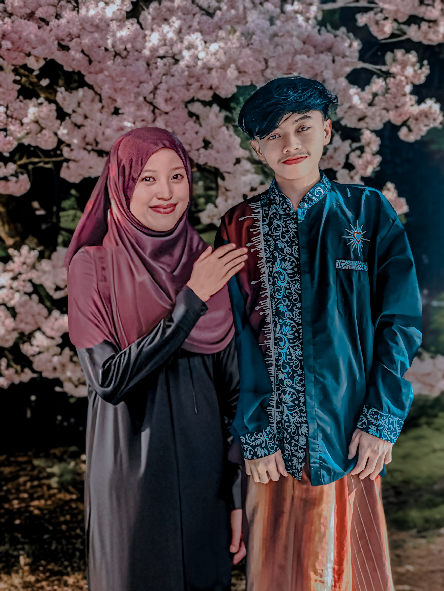

Semoga cerita kita terus berlanjut,
tahun demi tahun. 💖
💌 Surat Untukmu
Untuk Muti'a Nur Sadida,
dari Muhammad Fajar Muthohirin.
Muti'a Nur Sadida ❤️
Sejak 03 Maret 2025, ada cerita indah yang menjadi bagian dari hidupku.
Terima kasih sudah menjadi seseorang yang begitu berarti. Aku tidak bisa menjanjikan bahwa setiap hari akan selalu sempurna, tetapi aku ingin terus belajar menjaga, menghargai, dan menyayangimu dengan tulus.
Semoga setiap tanggal 03 Maret menjadi pengingat bahwa hubungan ini layak dirawat, bukan hanya dirayakan.
Semoga kita selalu diberi kesempatan untuk tumbuh bersama, melewati hari-hari sulit, dan menciptakan lebih banyak kenangan indah.
Dari aku, Muhammad Fajar Muthohirin,
untuk kamu, Muti'a Nur Sadida.
I love you. ❤️
Musik akan dicoba diputar saat surat dibuka.
Jika browser memblokirnya, tekan tombol Putar Musik.
📸 Kenangan Kita

Letakkan ketiga foto di folder yang sama dengan file index.html.